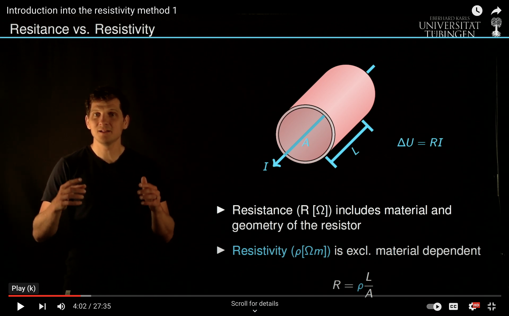
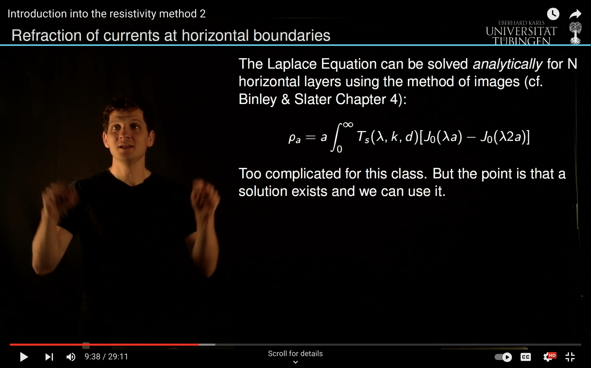

Introduction to resistivity mapping
A good introduction to resistivity mapping is given by Binley and Slater accessible as a online resource from the library. In the video below I summarized some essentials from an applied perspective:
An important and educational example are principles of vertical electrical sounding which provides us with a forward model that can be handled using standard computers.
Vertical electrical sounding
Twin experiment